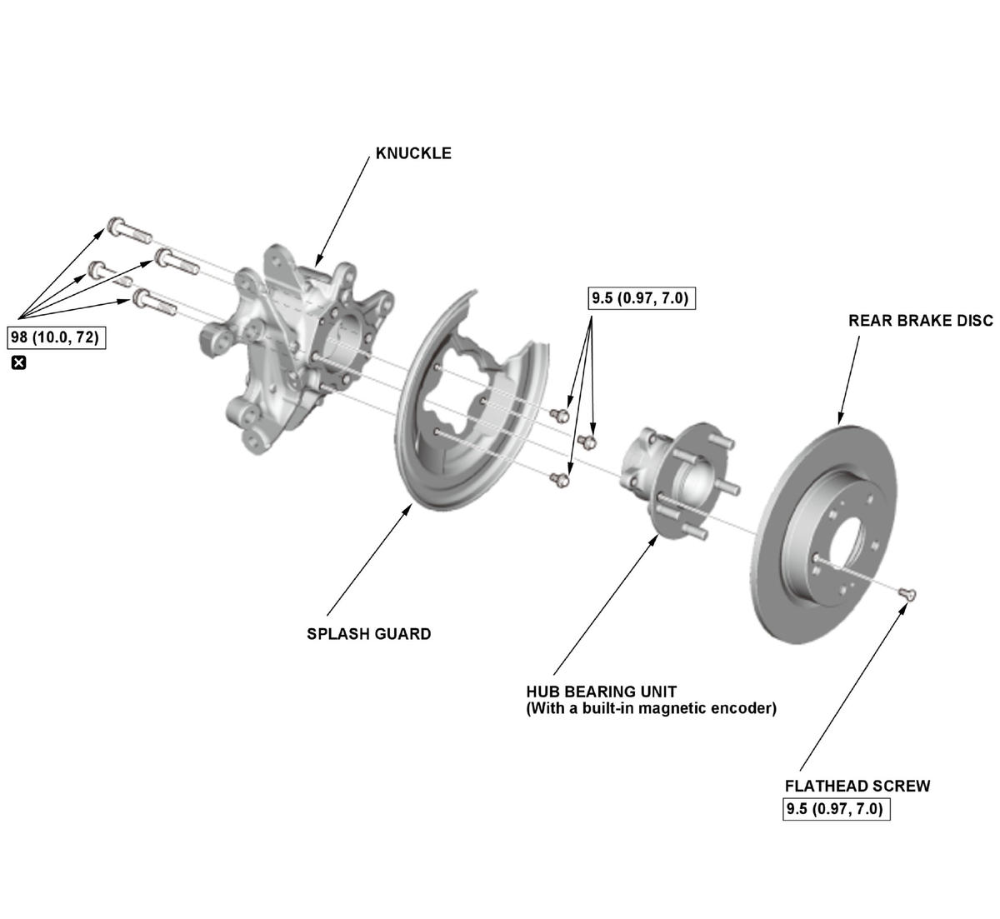

LEMON Manuals
: Even more car manuals for everyone: 1960-2025
Home
>>
Honda
>>
2016
>>
Civic LX, 4D Sedan, Automatic CVT Trans
>>
Repair and Diagnosis
>>
Suspension
>>
Front Suspension
>>
Suspension System - Service Information
>>
Removal and Installation
>>
Rear Knuckle/Hub Bearing Unit Removal and Installation
>>
Exploded View
Exploded View
NOTE:
How to read the torque specifications
.
Knuckle/Hub Bearing Unit
Fig 1: Exploded View Of Rear Knuckle/Hub Bearing Unit Components With Torque Specifications

Courtesy of HONDA, U.S.A., INC.